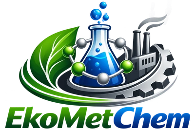

Демонстрация эффектов. Это не новая структура сайта.
Наведи курсор на карточку. На телефоне действует подсветка при нажатии, а фон продолжает двигаться.
Световые импульсы проходят по линиям. Зелёные и голубые акценты остаются за содержимым.
Посмотреть следующий фонКонтуры плавно смещаются; импульсы проходят по их кривым.
Детали второго плана отключаются на узком экране.
При системной настройке уменьшения движения все фоны становятся статичными.